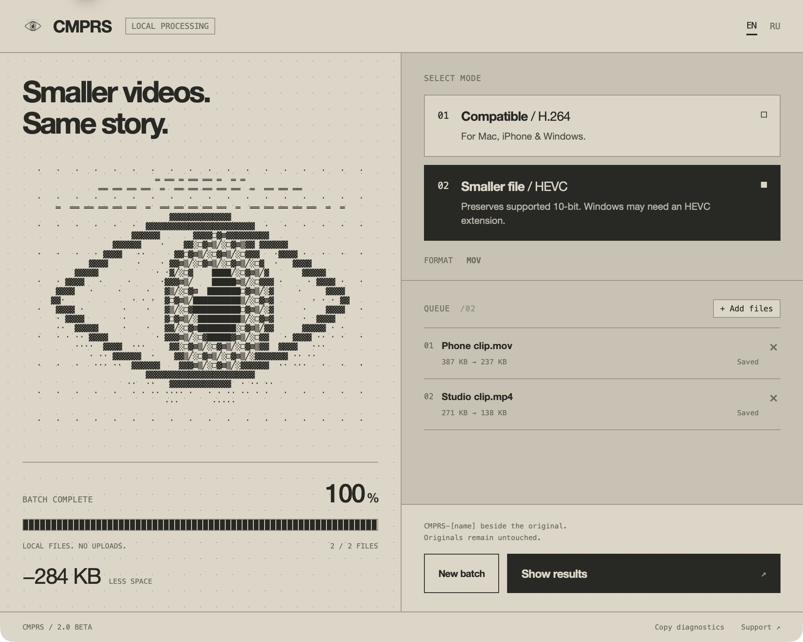
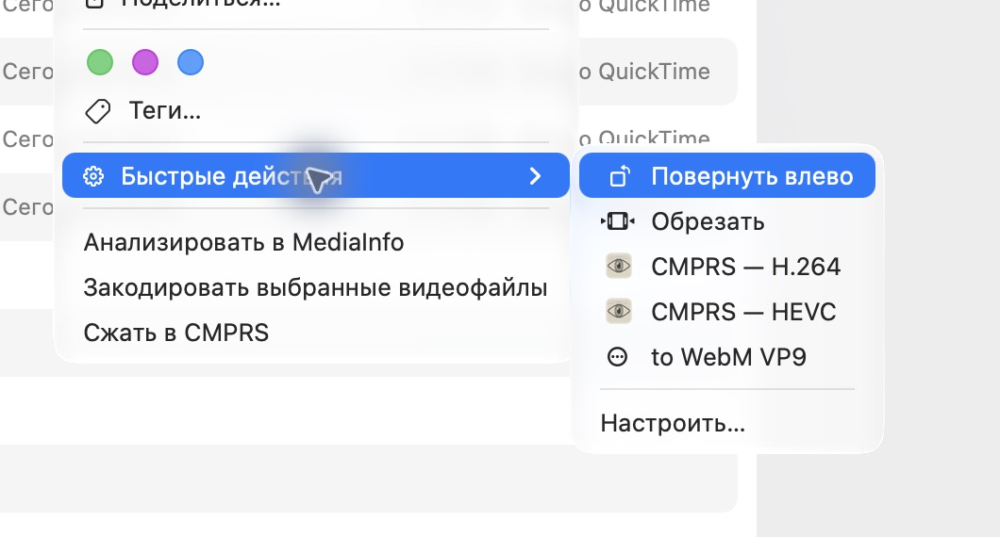

01 / H.264□
CompatibleH.264 / MOV
For easy playback on Mac, iPhone and Windows. 8-bit output, 4:2:0 color sampling. Converting a 10-bit source requires your permission.
 CMPRS
CMPRSCMPRS / NATIVE VIDEO COMPRESSION
A little less weight.
A lot more room for what’s next.
H.264 + HEVC · ALWAYS MOV · ALL ON YOUR MAC
Keep the frame size and frame timing. Choose the codec that fits where your video is going.
For easy playback on Mac, iPhone and Windows. 8-bit output, 4:2:0 color sampling. Converting a 10-bit source requires your permission.
A more efficient codec, with supported 10-bit kept intact. Windows may need an HEVC extension or compatible player. Output uses 4:2:0.
ONE RUN / THE WHOLE QUEUE
A blinking eye, real progress, and a simple queue. Your Mac handles every file locally.

RIGHT WHERE YOUR FILES ARE
The website installer adds the app and both Quick Actions together. Select one video or several, then choose your mode.
Always a MOV. Always beside the source. The CMPRS- prefix keeps results easy to find; originals and previous results stay untouched.

Open the DMG and run Install CMPRS. If macOS has disabled Finder actions, enable them in Extensions settings.
Drop videos into CMPRS or select them in Finder → Quick Actions → CMPRS — H.264 / HEVC.
Allow access to the source folder. CMPRS saves a separate result only when it is smaller, and explains files it cannot process.
ALL ON YOUR MAC / NO ACCOUNT / NO UPLOADS
CMPRS 2.0 is a new native compressor for Intel and Apple Silicon Macs running macOS 13 or later.
2.0 / BETA
The new chapter.The new build is being prepared for public download. Follow releases for availability.
Need the previous release? Legacy 1.0.6 / Ironclad has the previous engine and interface. The two-mode design shown here belongs to 2.0.
Compression is lossy, and savings vary. macOS-supported inputs only. HDR, Dolby Vision, alpha and unsupported tracks are refused with an explanation. CMPRS is a Mac app; playback on other platforms depends on their player and codec support.